Paternal family · 父亲的家人
Discipline, resilience, and quiet strength.
A small record of my grandmother and my father—two lives shaped by education, responsibility, and very different chapters of modern China.
Grandmother · 奶奶
A teacher, a survivor, and the center of our family.
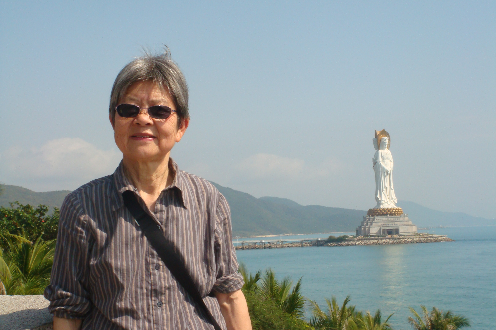
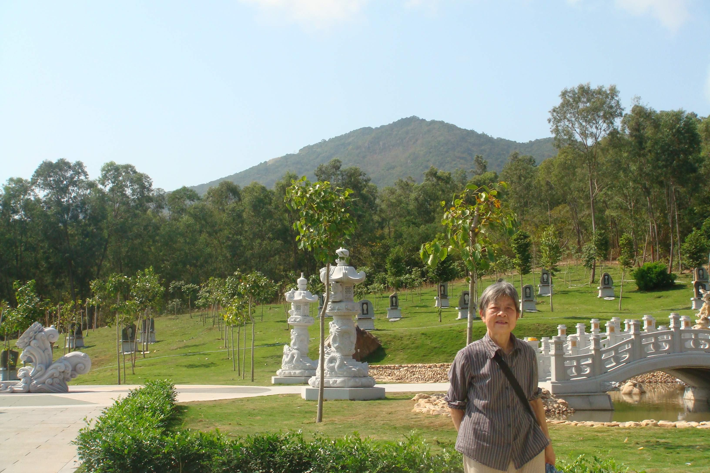
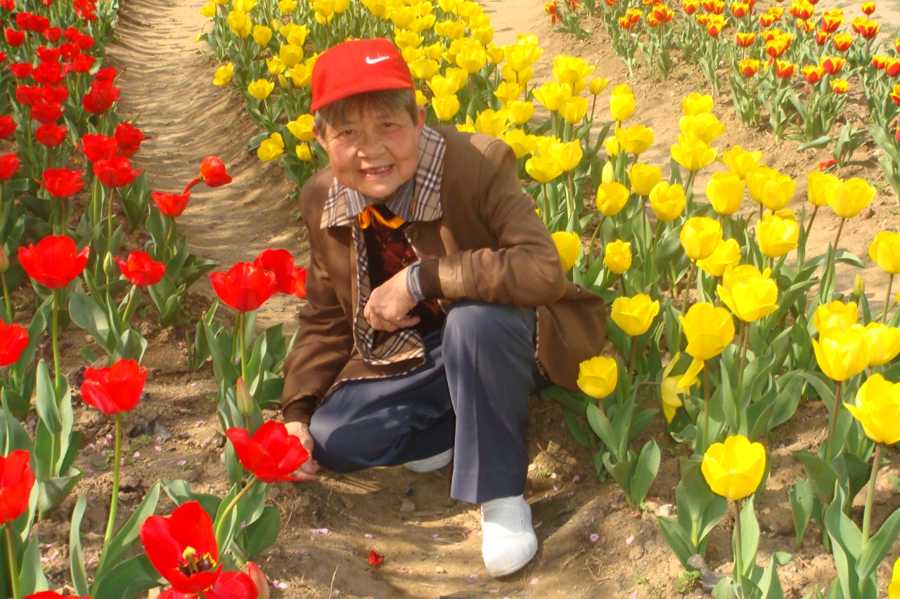
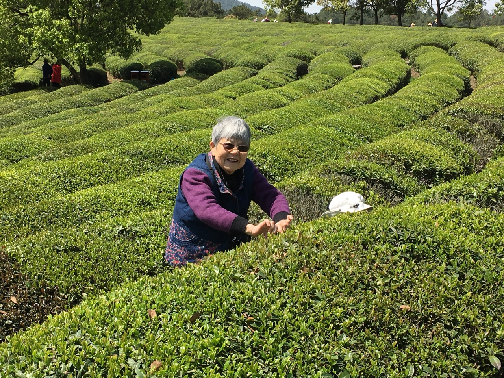
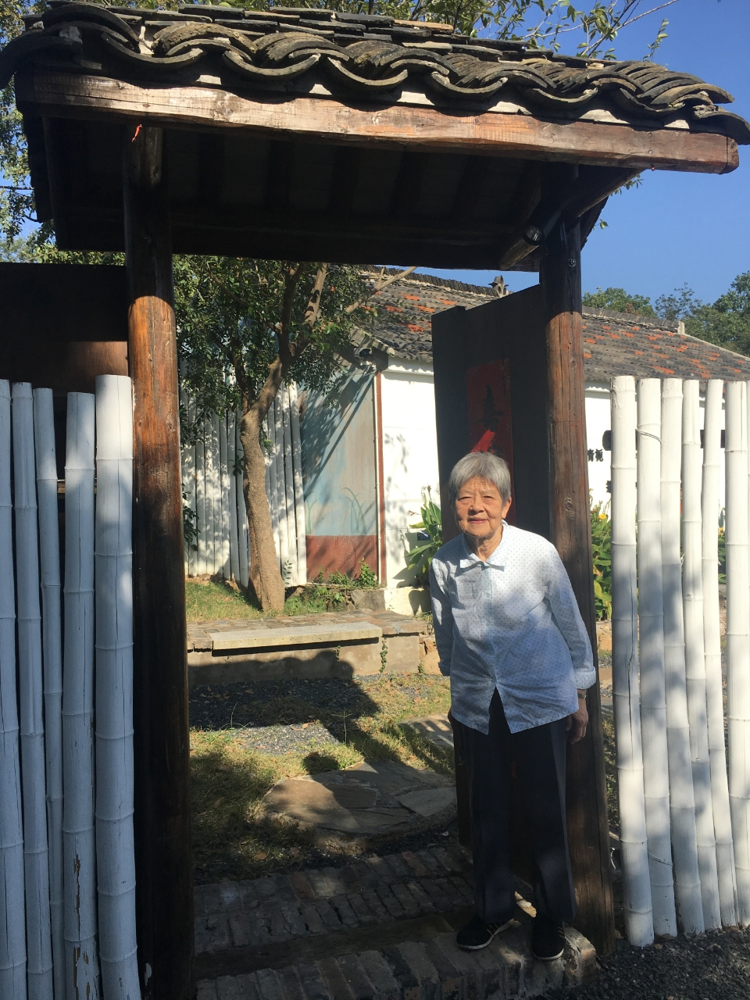
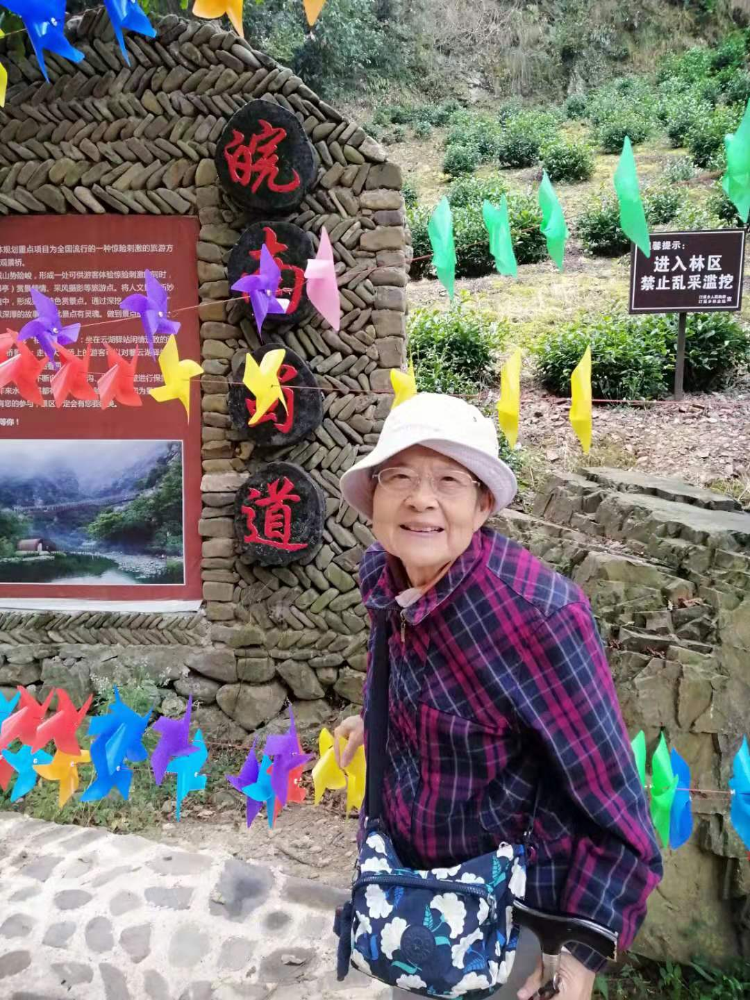
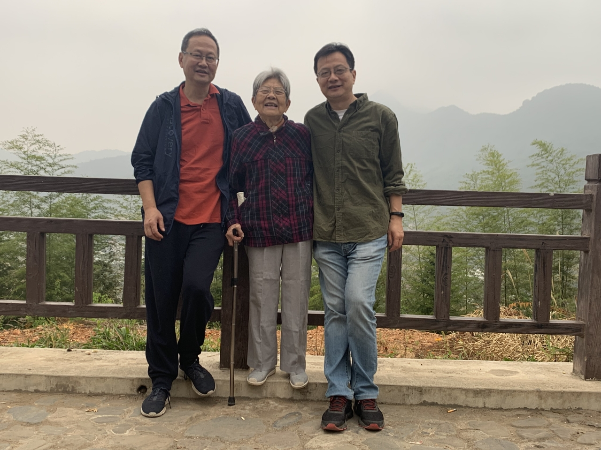
My grandmother is a retired teacher, a woman of warmth, wisdom, and resilience. In her decades of teaching, she shaped the minds and hearts of countless students with patience and dedication. At home, she has always been a gentle and loving presence—cooking, caring, and quietly keeping our family strong. Her values, passed down through stories and actions, have deeply influenced who I am today.
She is not only my grandmother, but also a living witness to history. Born in 1936, she survived the horrors of the Nanjing Massacre. As a young girl, she endured fear and loss—experiences that marked her deeply but never defined her spirit. Her quiet strength and dignity speak volumes. You can read more about her legacy and resilience on Baidu Baike.
我的奶奶是一位退休教师，温柔而坚韧。她在教学生涯中倾注了无限的耐心和热情，培养了无数学生，也教会了我们如何做人。在家中，她是无可替代的支柱：用一日三餐维系着家的温度，用行动传承着勤俭、善良与坚强。
她不仅是我的奶奶，更是历史的亲历者。她出生于1936年，是南京大屠杀的幸存者。童年的她经历了战争带来的恐惧与创伤，那些刻骨铭心的记忆，塑造了她坚韧沉静的性格。她用一生默默诠释着“幸存者”的意义。想了解更多她的故事，请访问百度百科。
Father · 爸爸
An example built through study and self-discipline.
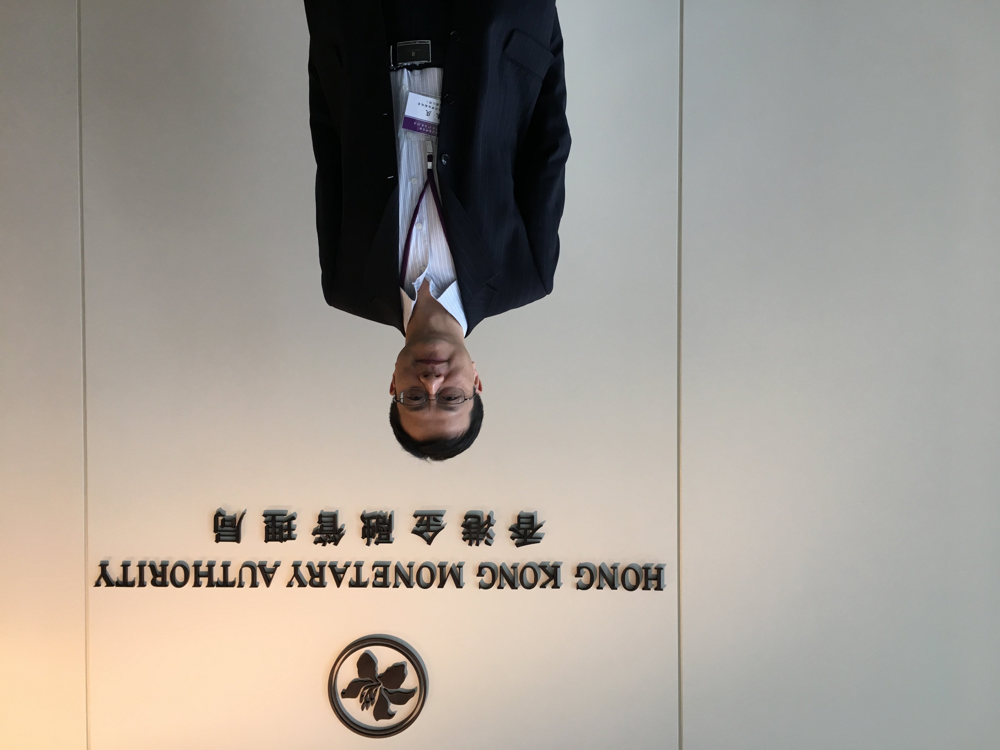
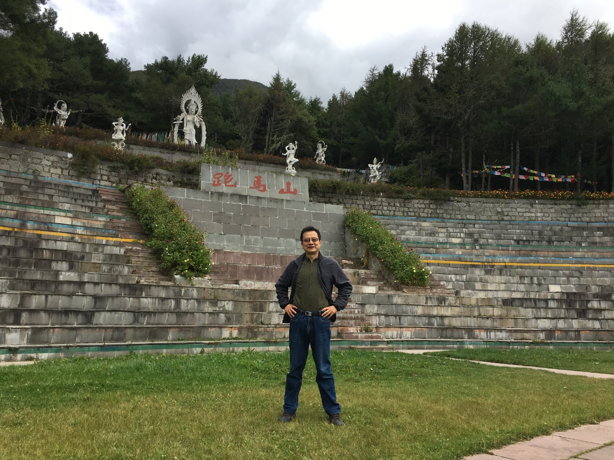
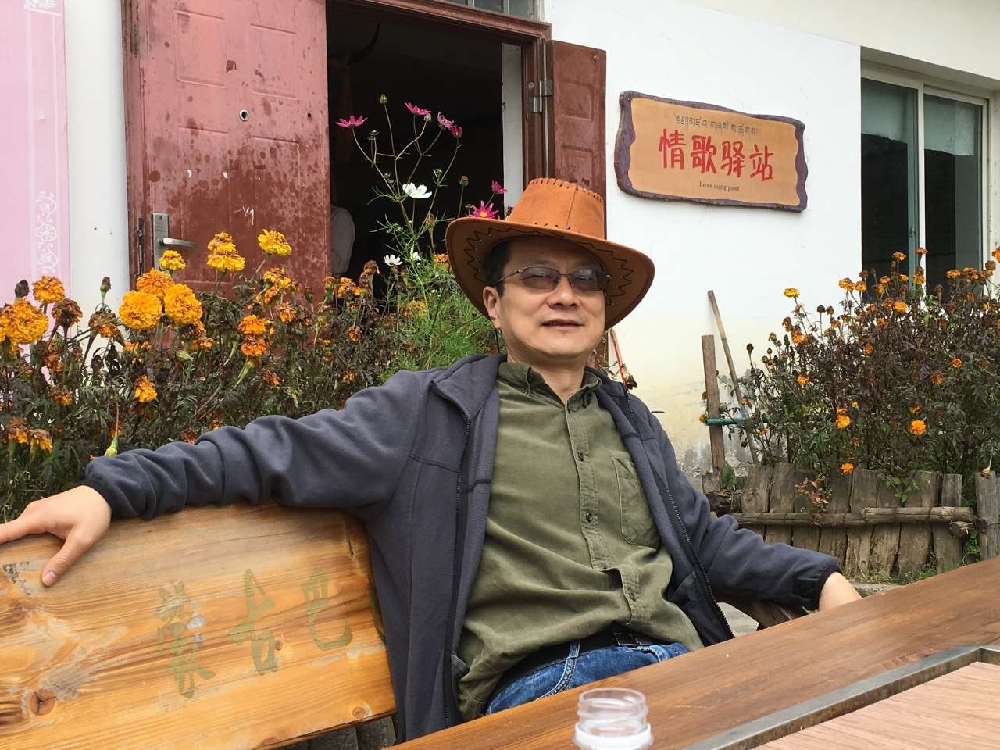
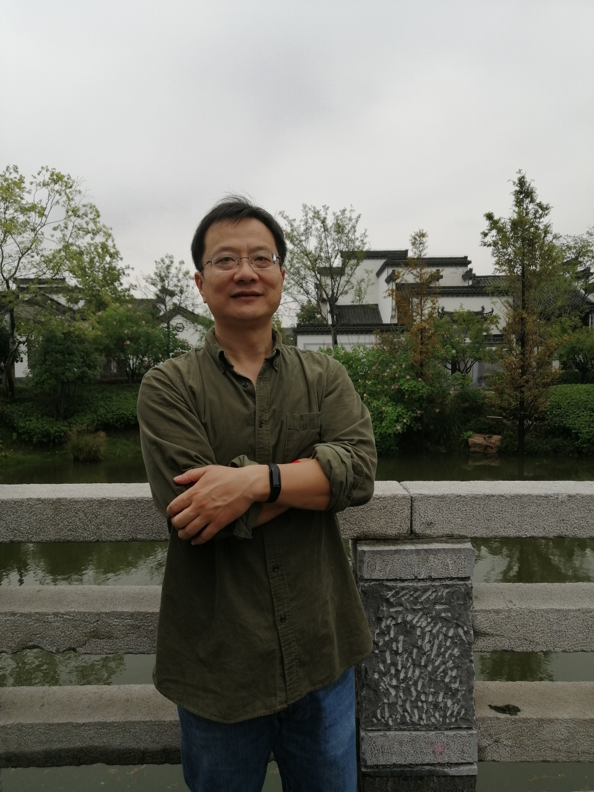
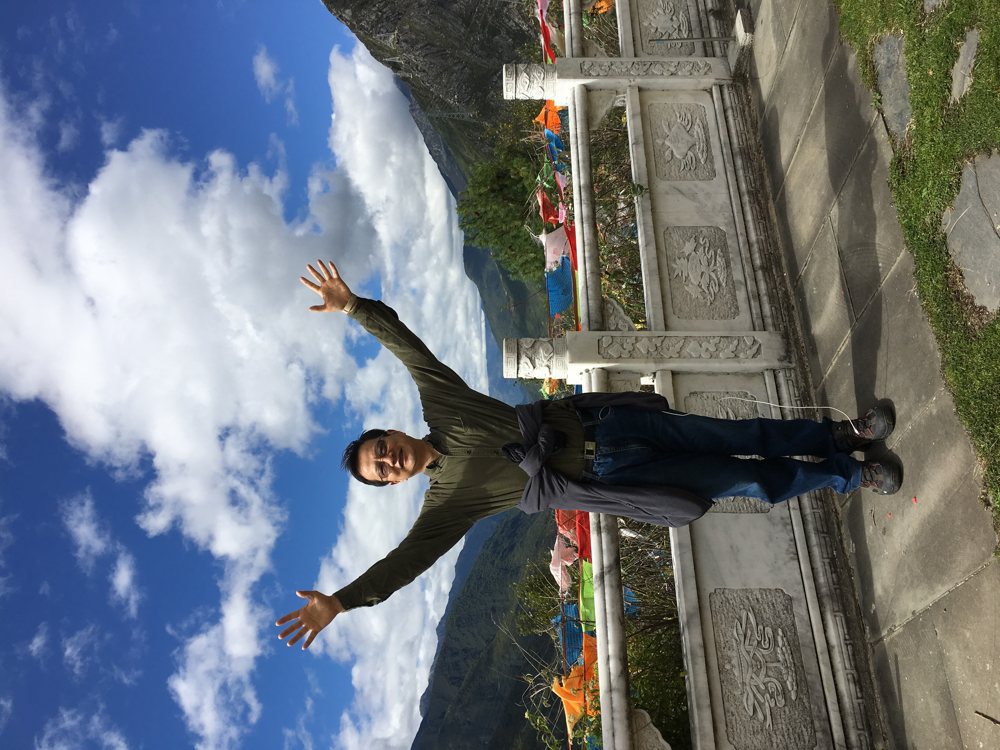
My dad is the most academically accomplished person in our family, holding a Ph.D. in Economics. He has built a successful career through intellect, discipline, and determination. His academic achievements have always stood as a symbol of what is possible through hard work.
During my upbringing, he was a strict figure—setting high standards and expecting results. Our relationship was not always easy, and communication could be challenging at times. But over the years, I’ve come to recognize the value in the principles he emphasized: responsibility, perseverance, and self-discipline. Even if we see the world differently at times, I respect his path and the example he set.
我的爸爸是我们家族中学历最高的人，拥有经济学博士学位。他靠着严谨的思维和坚定的努力，在学术与事业上取得了令人敬佩的成就。他的经历证明了努力与专注可以带来的改变。
在我成长过程中，他对我要求很高，也比较严厉。我们的相处有时并不轻松，沟通也曾存在障碍。但随着时间推移，我渐渐理解了他所坚持的原则：责任感、坚持以及自律。虽然我们有时观点不同，但我始终尊重他。